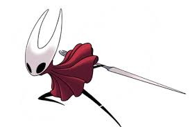
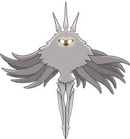
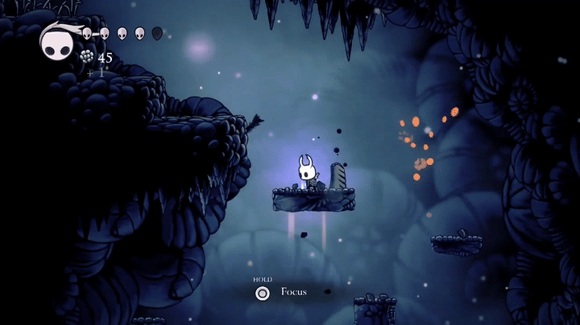

Bem-Vindo ao Lugar onde você conhecerá um pouco sobre jogo Hollow Knight, Um jogo simples, porém bem desafiador e com uma história mais que profunda... Veja a seguir!
Enredo e Ambiente
O jogo se passa no vasto e misterioso mundo subterrâneo de Hallownest, uma antiga civilização agora em ruínas. O protagonista é um cavaleiro sem nome, chamado "Hollow Knight" (ou apenas o Cavaleiro). Ele é uma pequena criatura que explora o mundo, enfrentando inimigos, desvendando segredos e tentando entender o mistério por trás do colapso da civilização. A história é contada de maneira sutil, com pouca narração direta, o que faz com que o jogador precise explorar e descobrir mais sobre a trama à medida que avança.
Gameplay
O estilo de jogo é Metroidvania, o que significa que o jogador explora um vasto mapa interconectado, desbloqueando novas habilidades ao longo do caminho, que permitem acessar novas áreas. O combate é desafiante e satisfatório, com o Cavaleiro usando uma espada (ou "nail") para enfrentar uma variedade de inimigos e chefes. Além disso, o jogo possui uma mecânica de "soul", que permite ao jogador coletar energia dos inimigos derrotados para curar o Cavaleiro ou liberar ataques poderosos.
Mundo e Exploração
Hallownest é um mundo grande e interconectado, cheio de segredos, inimigos, itens e NPCs. A exploração é central no jogo, e cada nova habilidade adquirida permite ao jogador voltar a áreas anteriores e descobrir novos caminhos. O jogo é conhecido pela sua dificuldade, especialmente os chefes e os desafios de plataforma.
Arte e Música
A arte de Hollow Knight é um dos seus maiores destaques. Com um estilo 2D desenhado à mão, o jogo apresenta uma atmosfera sombria e melancólica, mas também belíssima. A música, composta por Christopher Larkin, é igualmente notável, com trilhas que complementam perfeitamente o tom do jogo, variando entre momentos calmos e músicas épicas de combate.
Sucesso e Legado
"Hollow Knight" recebeu elogios pela sua jogabilidade refinada, design de mundo, arte e trilha sonora. Ele também gerou uma base de fãs fiel, com muitos clamando por uma sequência, que foi anunciada como "Hollow Knight: Silksong". O jogo também se destacou pela falta de elementos de "grind" ou de monetização, o que ajudou a solidificar sua popularidade no cenário de jogos indie.
🧠 Análise Aprofundada
História e Narrativa
A trama central gira em torno de uma infecção misteriosa que corrompeu os habitantes de Hallownest.
O Cavaleiro é uma das várias "vasilhas" criadas para conter essa infecção, mas apenas ele permanece em busca de uma solução definitiva.
Ao longo da jornada, o jogador encontra figuras importantes como:
Hornet
Uma guerreira ágil e enigmática com conexões profundas com o passado de Hallownest.
O Rei Pálido

Uma figura divina que tentou salvar sua civilização da infecção.
A Radiância
A entidade responsável pela infecção, representando o antigo culto esquecido.
🕹️ Gameplay e Mecânicas
Hollow Knight oferece uma experiência rica e desafiadora, misturando ação em plataforma com elementos de exploração e combate intenso. Seu estilo Metroidvania significa que o mundo é vasto, interconectado e cheio de segredos — e que novas habilidades desbloqueiam o acesso a áreas antes inacessíveis. Vamos detalhar os principais sistemas do jogo:
⚔️ Combate
O combate é direto, mas exige precisão e atenção. O Cavaleiro utiliza uma arma chamada Nail (ou “espinho”), que funciona como uma espada curta. Os ataques são rápidos, mas exigem que o jogador se aproxime dos inimigos, o que cria combates de alto risco e recompensa.

Luta contra o Falso Cavaleiro

Luta contra Os Lords Louva-Deus

Luta contra a Hornet da Borda
🗡️Ataques Básicos
Golpes horizontais e verticais.
E com upgrades, é possível aumentar o alcance e dano do Nail.
Ferrão Velho
Dano: 5
Ferrão Afiado
Dano: 9
Ferrão Canalizado
Dano: 13
Ferrão Serpenteado
Dano: 17
Ferrão Puro
Dano: 21
🧙♀️Habilidades Especiais (Feitiços)
Usando Soul, o Cavaleiro pode lançar feitiços ofensivos como:
Espírito Vingativo
.jpg)
(projétil)
Mergulho Desolado
.jpg)
(ataque vertical)
Espectros Uivantes
.jpg)
(explosão acima do personagem)
💠Soul e Cura
Uma das mecânicas centrais do jogo é o Soul Gauge (Medidor de Alma). A cada golpe acertado em um inimigo, o Cavaleiro coleta uma substância chamada Soul (Alma), armazenada em uma esfera branca no canto superior esquerdo da tela.
Essa energia tem dois usos principais:
Cura (Focus)
O jogador pode gastar Soul para se curar. Isso exige um momento de vulnerabilidade, já que o Cavaleiro precisa ficar parado canalizando energia.
Feitiços

Soul também pode ser usada para ataques mágicos, o que força o jogador a decidir entre atacar ou se curar.
🪬Charms (Amuletos)
Os Charms são itens que oferecem bônus e modificações no estilo de jogo.
Eles permitem ao jogador personalizar o Cavaleiro de acordo com sua preferência.
Exemplos de charms incluem:
Corte rápido

Aumenta a velocidade dos ataques
Pedra Xamã

Aumenta o poder dos feitiços
Canção de larva
Ganha Soul ao receber dano
Força Inquebrável

Aumenta bastante o dano do Nail

Cada charm tem um custo em notches (espaços de amuleto). Gerenciar quais charms usar dentro do limite de notches é uma parte estratégica do gameplay.
🌀Exploração e Habilidades
A exploração é essencial. Hallownest é um mundo interconectado com múltiplos caminhos, atalhos e áreas secretas.
No início, o acesso é limitado, mas o Cavaleiro adquire habilidades de movimento que abrem novas possibilidades:
Manto de Asa de Mariposa

Dash para esquiva e acesso a novas áreas.
Asas do Monarca

Pulo duplo.
Coração de Cristal

Um impulso rápido em linha reta.
Lágrima de Isma

Permite nadar em água ácida.
Com essas habilidades, o jogador pode revisitar áreas anteriores para explorar novos caminhos, o que é um pilar do gênero Metroidvania.
🎯 Plataforma e Precisão
Além do combate, Hollow Knight é exigente na plataforma: Espinhos, serras, inimigos voadores, e saltos cronometrados desafiam a precisão do jogador. Áreas como Path of Pain são famosas por sua dificuldade extrema em plataforma, exigindo domínio total dos controles.

Path of Pain
(Caminho da Dor)

🧪 Progressão e Sistema de Morte
A progressão é baseada na exploração e desbloqueio de habilidades, enquanto o sistema de morte adiciona risco real à aventura, exigindo cautela constante.
Geo

A moeda do jogo, obtida ao derrotar inimigos, usada para comprar mapas, itens e melhorias.
Bancos

Servem como pontos de descanso (e salvamento).
Sistema de morte

Ao morrer, o Cavaleiro deixa um Shade (sombra). É preciso derrotá-lo para recuperar sua Soul máxima e o Geo perdido. Se morrer antes de recuperá-lo, os Geo se perdem para sempre.